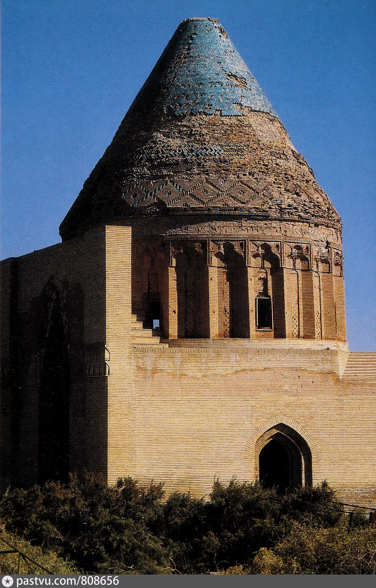
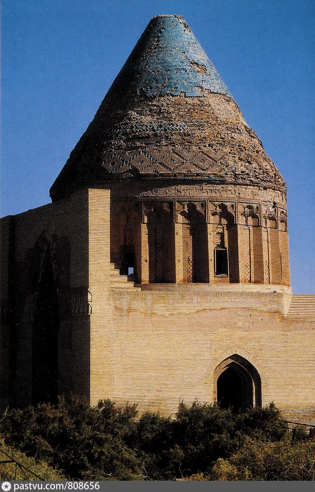

В Хорезмском оазисе издавна правили хорезмшахи. Представители династий афригидов, маъмунидов и алтынташей занимали престол, принимая титул хорезмшаха. Ануштегиниды – династия из рода огузов, основатели её участвовали в битвах на Туранской равнине, добились назначения верховными правителями и су- мели прославиться далеко за пределами Хорезма. Основатель династии Ануштегин был одним из самых доверенных лиц сельджукидского султана Малик-шаха. Примерно в 1077 году его назначили наместником Хорезма. В 1097 году эта должность перешла к его сыну Кутбиддину Мухаммаду. Оставаясь вассалом сельджуков, он ежегодно отвозил подати со своих владений в Мерв или поручал это своему сыну Атсызу. После смерти Кутбидди Мухаммада султан Санджар передал управление Хорезмом Атсызу. Вначале Атсыз, которому не было и тридцати, как и его отец, служил династии сельджуков верой и правдой. Но по мере укрепления своих позиций и ослабления соперника он добивается независимости. Это, в свою очередь, заставило султана Сан- джара несколько раз отправлять войска в Хорезм. Войско Атсыза было разбито, и он был вынужден бежать.

По мнению историков Рашид-Ад-Дина и Хафиза Абру, хорезмшах Ануштегин, основатель династии ануштегинов, начал свою службу во дворце султана Джалалиддина Маликшаха I. Он стал одним из самых доверенных лиц султана. Позднее он получил должность мутасаррифа и титул «шихне Хорезма». Позже правителем Хорезма стал сын Ануштегина Кутбиддин Мухаммад. После завоевания Хорезма султан Санджар передаёт его в управление племяннику Атсыза Сулейманшаху. Однако ему не удалось закрепить там свою власть. Как только Сулейманшах ушёл в Мерв, Атсыз вернулся в Хорезм и при поддержке местных жителей восстановил свою власть. Атсыз завоевал Бухару. Он получил грамоту багдадского халифа, признавшего его «правителем Хорезмской области и провинций на западной и восточной границах, которые были взяты им и присоединены к Хорезму». Атсыз также захватил Мерв и Нишапур. Он начал чеканить золотые монеты со своим именем.

Султан Мухаммад Хорезмшах - объявил Самарканд столицей государства. Туркан хатун - «Властительница мира» - мать Мухаммада Хорезмшаха, жила в Гургандже. Туркан хатун -умерла в плену в Каракоруме, столице монгольского государства. Диван джайш - диван по военным вопросам. Диван равотиб - по вопросам жалованья военных. Диваны подчинялись Почетному меджлису при верховном правителе во главе с визирем. Визирь - посредник между подданными и главой государства. Титулы визирей - садр, дастур, ходжайи бузург. Ала ад-Дин Мухаммад - отменил должность визиря и учредил совет из шести вакилдаров (уполномоченных) при правителе. Хаджибы - выполняли самые важные поручения султанов и сопровождали их. Устаздар - отвечал за хозяйственные службы (конюшни, кухни, пекарни). Амир-ахур - конюшенный, отвечал за лошадей султана. Чашнигир - придворный, пробующий пищу и напитки, подаваемые султану. Даватдар - секретарь верховного правителя. Фарраш - начальник службы, отвечающей за постельные принадлежности для султана, ковры, палатки и др. Столица Хорезма при Ала ад-Дине Мухаммаде - Гургандж. Города Хорезма - Мерв, Бухара, Самарканд, Рей, Нишапур, Ардахушмисан, Хива, Дарган, Савакон, Гавшфиндж, Кят, Нузкот, Хазарасп Куня Ургенч - мавзолей Наджмиддина Кубро и Эль-Арслана.

Эль-Арслан, сын Атсыза, вступивший на престол после его смерти, также пытался проводить независимую поли- тику. Эль-Арслан столкнулся в Мавераннахре с каракитаями и разбил их. Он захватил Нишапур и организовал поход в Азербайджан. Однако Эль-Арслану не удалось сформировать мощное политическое объединение вокруг Хорезма. Смерть хорезмшаха Эл-Арслана положила начало длительной борьбе за престол между его сыновьями Султан-шахом Махмудом и Текешем (1172–1200). Только после смерти Султан-шаха Махмуда Текеш получает возмож- ность стать единоличным правителем. Текеш захватил большую часть западного Ирана и Кермана, планировал захватить столицу халифата Багдад. Однако он умер во время похода, и престол занял Ала ад-Дин Мухаммад (1200-1220). Ала ад-Дин Мухаммад изгнал каракитаев из Мавераннахра. Это зна- чительно повысило его авторитет. Земли от Азербайджана, Ирана, Хорасана до Индии были также захвачены хорезмшахом. Теперь главной целью султана Мухаммада стало завоевание Сирии, Малой Азии и Египта.